สมุนไพรไทย 22 ชนิดเสี่ยงสูญพันธุ์
ประกาศคุ้มครองและควบคุม 7 ชนิด
สธ.ประกาศรายชื่อ "สมุนไพรไทย" 22 ชนิดที่เสี่ยงสูญพันธุ์ เหตุจากเติบโตช้าและเมื่อใช้ต้องใช้ทุกส่วนของต้นสมุนไพรและใช้บ่อย
จึงได้คัดเลือกสมุนไพร 7 ชนิด เพื่อประกาศคุ้มครองและควบคุม ผู้ที่มีครอบครองต้องแจ้งจำนวนที่มี เผื่อทำแผนการปลูกทดแทน
รายชื่อสมุนไพรไทย 22 ชนิดที่เสี่ยงสูญพันธุ์
1. ถั่วดินโคก
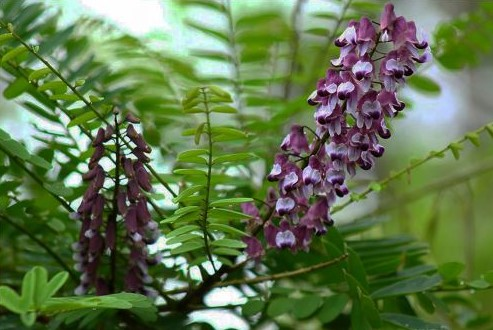
3. มะตูมนิ่ม
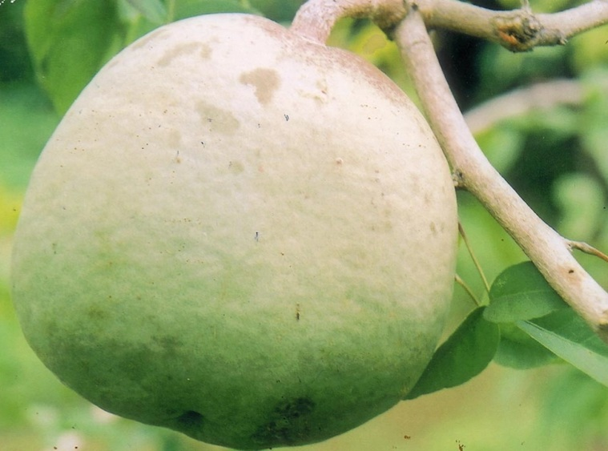
5. เร่ว

7. กระทุ่มนา
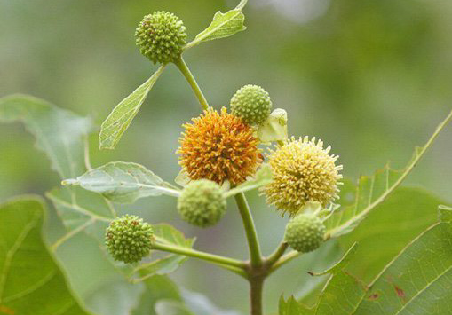
9. จุกโรหินี
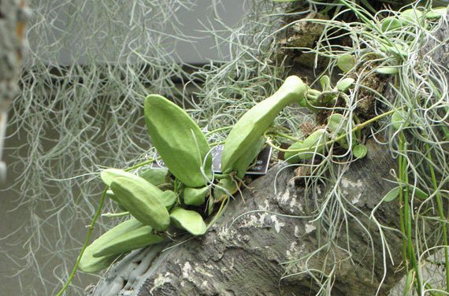
11. ชิงชี่
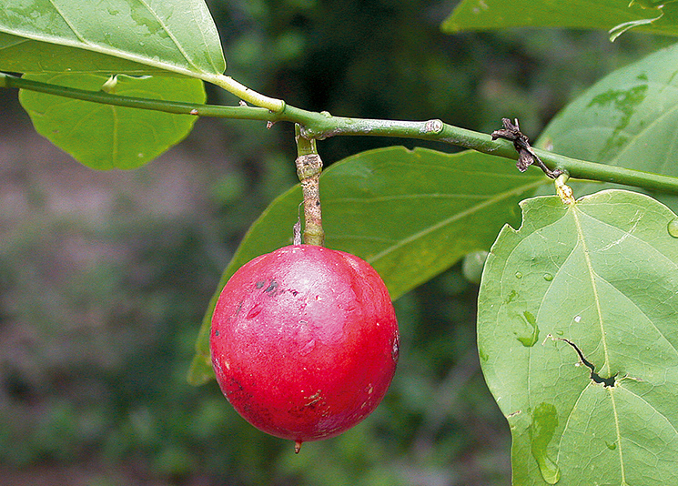
13. นาวแย้มป่า

15. พังคี

17. สะค้าน
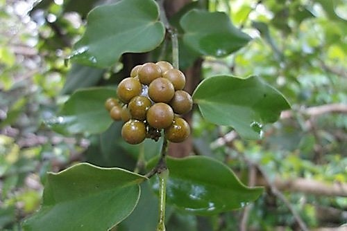
19. อบเชยไทย
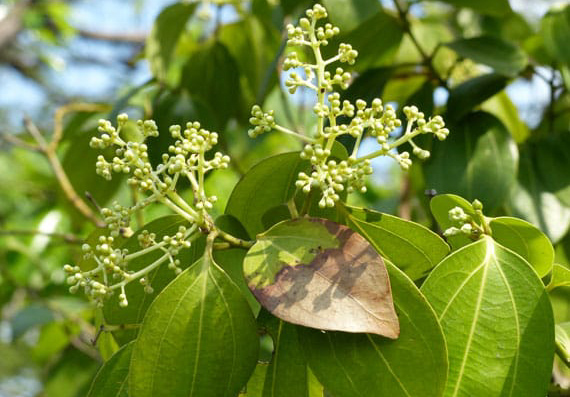
21. เถาเอ็นอ่อน

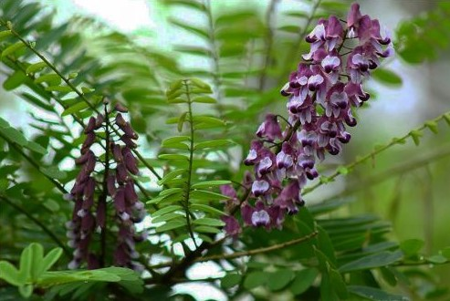
3. มะตูมนิ่ม
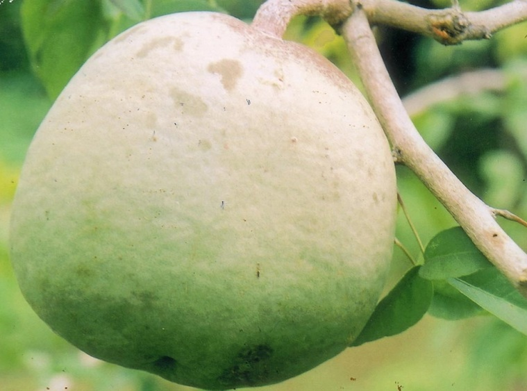
5. เร่ว
7. กระทุ่มนา
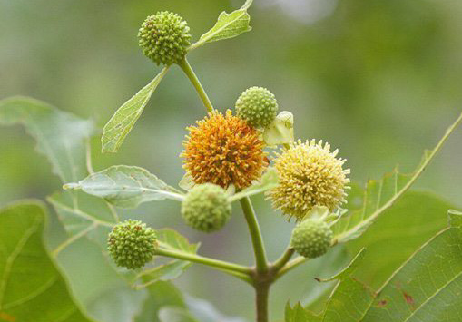
9. จุกโรหินี
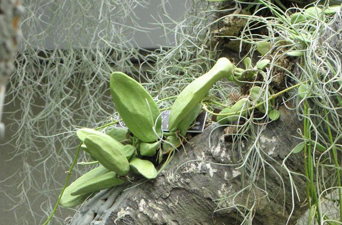
11. ชิงชี่
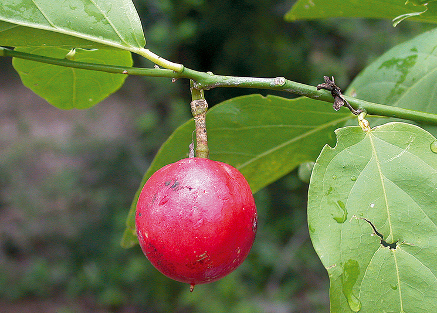
13. นาวแย้มป่า
15. พังคี
17. สะค้าน
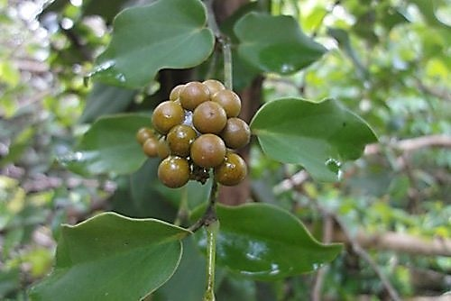
19. อบเชยไทย
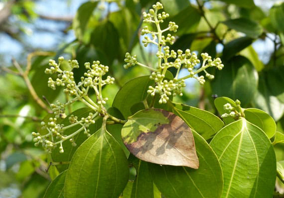
21. เถาเอ็นอ่อน
2. เทพทาโร

4. มะหาด
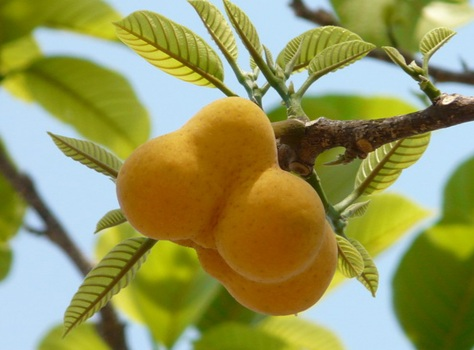
6. หัวร้อยรู
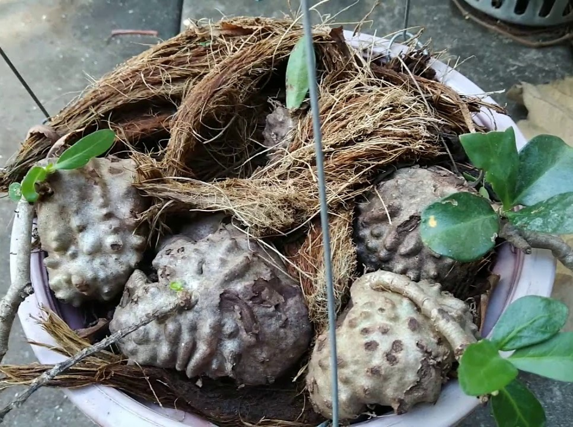
8. ขันทองพยาบาท

10. ชะเอมไทย
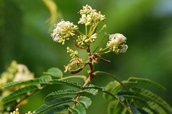
12. ตับเต่า
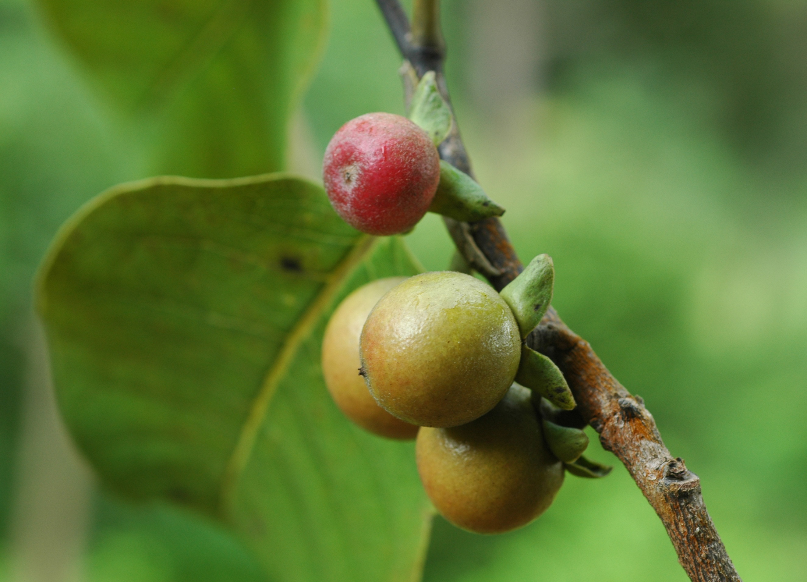
14. ปลาไหลเผือก
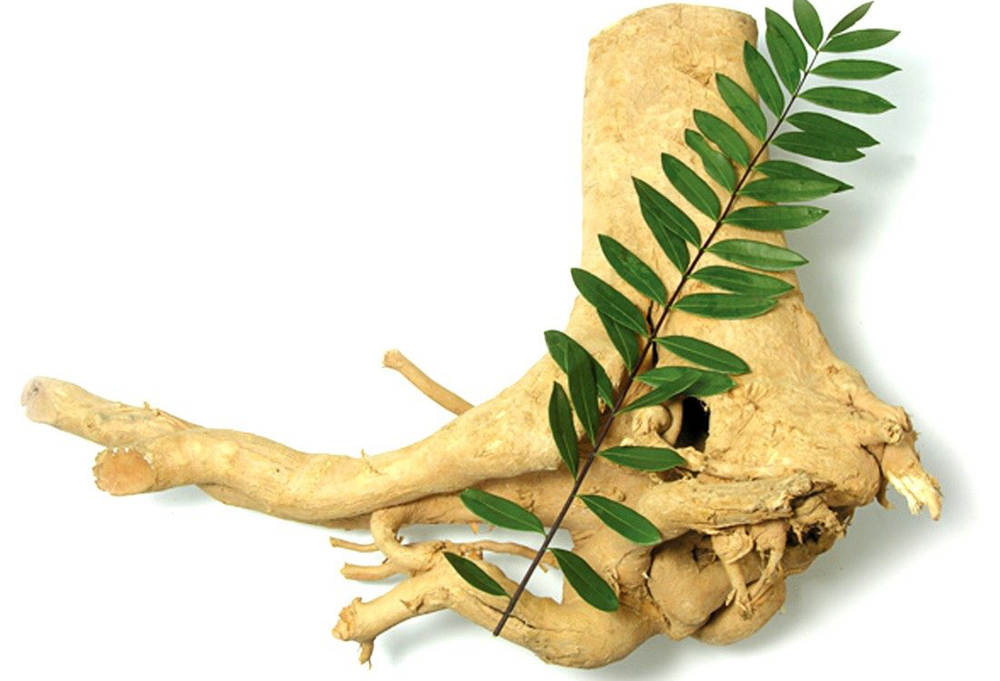
16. มะคังแดง
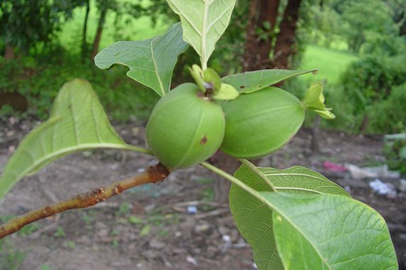
18. สารภีป่า

20. เฉียงพร้านางแอ่น
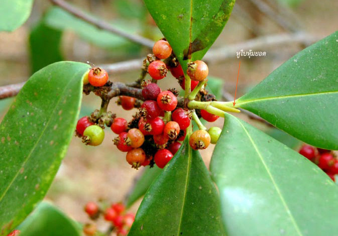
22. เปราะหอม
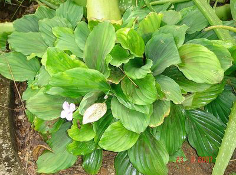
4. มะหาด
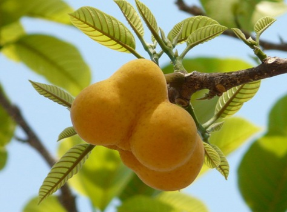
6. หัวร้อยรู
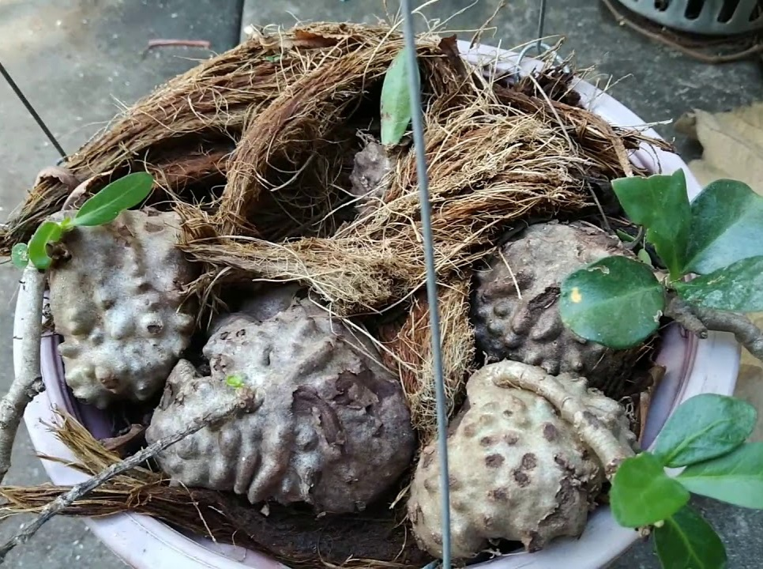
8. ขันทองพยาบาท
10. ชะเอมไทย
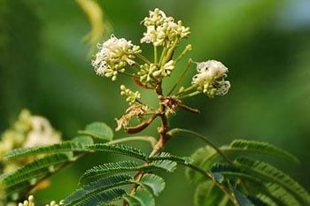
12. ตับเต่า
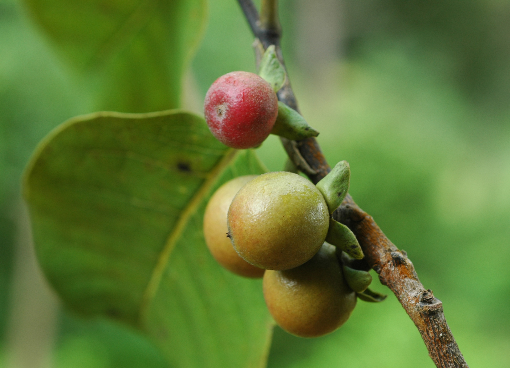
14. ปลาไหลเผือก
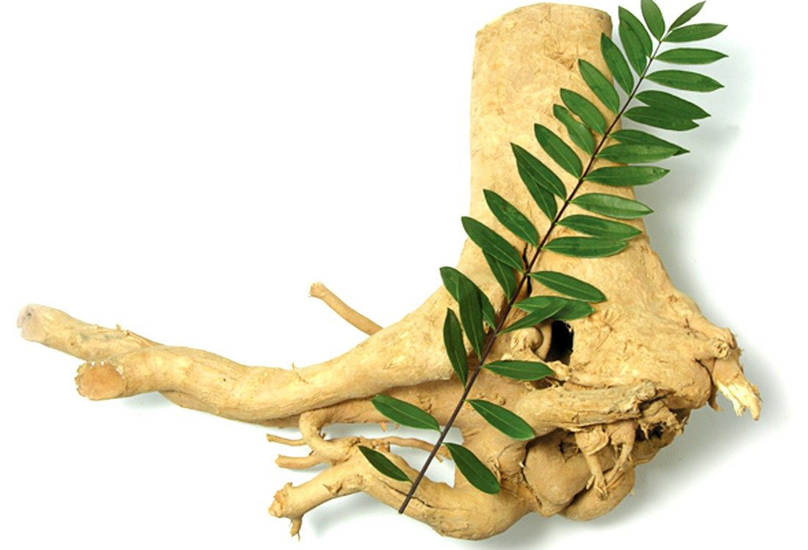
16. มะคังแดง
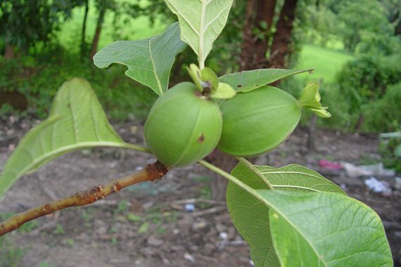
18. สารภีป่า
20. เฉียงพร้านางแอ่น
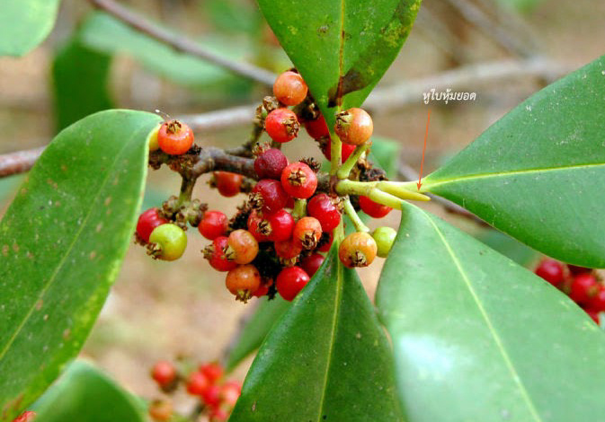
22. เปราะหอม
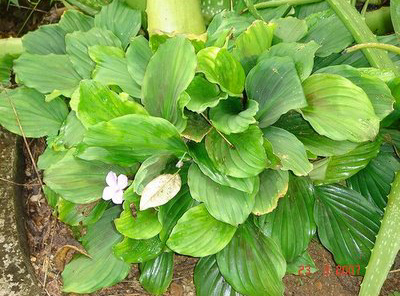
นายนันทศักดิ์ โชติชนะเดชาวงศ์ ผู้อำนวยการกองคุ้มครองภูมิปัญญาการแพทย์แผนไทยและพื้นบ้านไทย กรมพัฒนาการแพทย์แผนไทย และการแพทย์ทางเลือกกระทรวงสาธารณสุข ( สธ. ) กล่าวว่าขณะนี้มีสมุนไพรไทย 22 ชนิดที่กล่าวไปในข้างต้นที่เสี่ยงอาจจะสูญพันธุ์ ซึ่งประกอบด้วย 1. ถั่วดินโคก 2. เทพทาโร 3. มะตูมนิ่ม 4. มะหาด 5. เร่ว 6. หัวร้อยรู 7. กระทุ่มนา 8. ขันทองพยาบาท 9. จุกโรหินี 10. ชะเอมไทย 11. ชิงชี่ 12. ตับเต่า 13. นางแย้มป่า 14. ปลาไหลเผือก 15. พังคี 16.มะคังแดง 17. สะค้าน 18. สารภีป่า 19. อบเชยไทย 20. เฉียงพร้านางแอ 21. เถาเอ็นอ่อน และ 22. เปราะหอม
“ ตามปกติแต่ละจังหวัดจะมีการจดทะเบียนรายชื่อสมุนไพรที่มีอยู่ในจังหวัดนั้นๆ แบ่งออกเป็น 3 ประเภท คือ 1. สมุนไพรเพื่อการศึกษา
2. สมุนไพรพืชเศรษฐกิจ 3. สมุนไพรเสี่ยงอาจสูญพันธุ์
โดยจะมีคณะผู้เชี่ยวชาญเข้ามาจัดทำข้อมูลของสมุนไพรทั้ง 3 ประเภท จากนั้นได้เลือกออกมาเป็น 22 ชนิด ที่เสี่ยงอาจจะสูญพันธุ์ เนื่องจากเป็นสมุนไพรที่เติบโตช้า เมื่อจะใช้ต้องใช้ทั้งต้น บางชนิดใช้ทั้งราก และต้องใช้บ่อยจึงจะสามารถรักษาอาการได้ ” นายนันทศักดิ์ กล่าว
นายนันทศักดิ์ กล่าวว่า คณะกรรมการคุ้มครองและส่งเสริมภูมิปัญญาการแพทย์แผนไทยได้ประชุมหารือกัน โดยเลือกสมุนไพร 6 ชนิดจาก 22 ชนิดขึ้นมา คือ
ถั่วดินโคกหรือพิษนาศน์ เทพทาโร มะตูมนิ่ม มะหาด เร่ว และ หัวร้อยรู
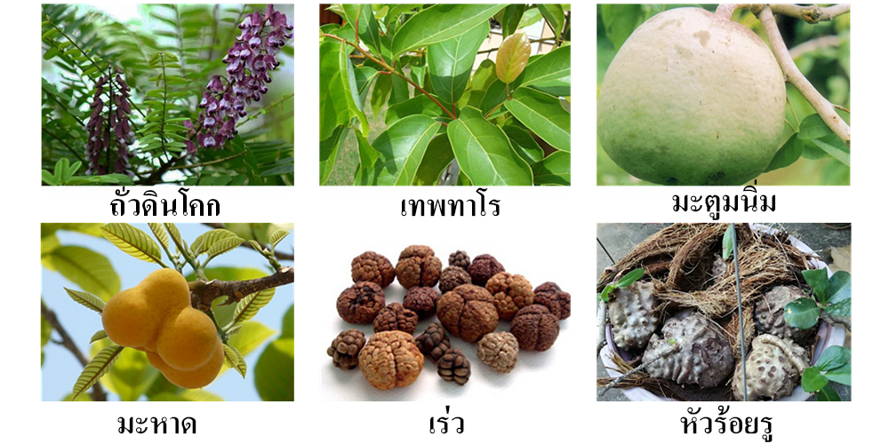
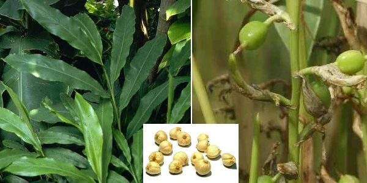
ขึ้นมาเป็นพิเศษด้วยอีกชนิดหนึ่ง เพื่อประกาศคุ้มครองและเป็นสมุนไพรที่ต้องควบคุมโดยหากใครมีสมุนไพร 7 ตัวนี้อยู่ในครอบครองไม่ได้ถือว่ามีความผิดเพียงแต่ต้องแจ้งมาทาง สธ.ให้รับทราบว่า มีอยู่เท่าใด เพื่อที่จะจัดทำแผนส่งเสริมการปลูกต่อไป เช่น บริษัทใดมีสมุนไพร 7 ชนิดนี้อยู่ ใช้ไปเท่าใด ต้องปลูกทดแทนเท่าใด เพื่อไม่ให้สูญพันธุ์ เป็นต้น